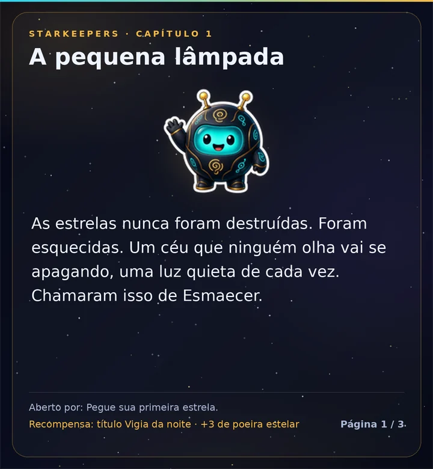

A história do céu
A história
As estrelas nunca foram destruídas, só esquecidas, e um céu que ninguém olha vai se apagando. Lumo, um robozinho-lâmpada, manteve uma lanterna acesa e conta a história em 8 capítulos e um interlúdio.
- Os capítulos abrem conforme você e seu servidor jogam: sua primeira captura, a primeira constelação acesa, novas regiões, um eclipse e mais.
- Cada capítulo dá um título; alguns dão um fundo novo.
- Leia com
/sky story.
